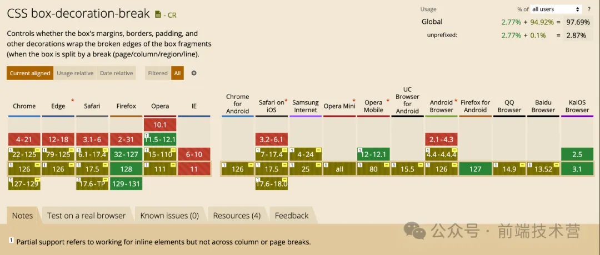

在 CSS 中，行元素默认情况下，行内元素不会独占一行，而是在一行内根据其内容的大小进行排列。行内元素的宽度和高度由其内容决定，不能直接设置宽度和高度。行内元素不能包含块级元素，只能包含其他行内元素或文本。行内元素可以设置水平方向的边距（margin）和内边距（padding），但不会影响到其他元素的布局。
假如有下面一篇文章，给文章中的优美语句设置高亮。代码如下：
<!DOCTYPE html>
<html>
<head>
<meta charset="utf-8">
<title></title>
<style type="text/css">.content { width: 600px; margin: 0 auto; line-height: 2; } .highlight { background: linear-gradient(#d5e8b7, #bad6b3); border: 1px solid #7e876b; padding: 0 4px; border-radius: 5px; }</style></head>
<body>
<div class="content">
<p>盼望着，盼望着，东风来了，春天的脚步近了。</p>
<p>一切都像刚睡醒的样子，欣欣然张开了眼。山朗润起来了，水长起来了，太阳的脸红起来了。</p>
<p>小草偷偷地从土里钻出来，嫩嫩的，绿绿的。园子里，田野里，瞧去，一大片一大片满是的。坐着，躺着，打两个滚，踢几脚球，赛几趟跑，捉几回迷藏。风轻悄悄的，草绵软软的。</p>
<p>
<span class="highlight">桃树、杏树、梨树，你不让我，我不让你，都开满了花赶趟儿。红的像火，粉的像霞，白的像雪。花里带着甜味，闭了眼，树上仿佛已经满是桃儿、杏儿、梨儿。花下成千成百的蜜蜂嗡嗡地闹着，大小的蝴蝶飞来飞去。</span>野花遍地是：杂样儿，有名字的，没名字的，散在花丛里，像眼睛，像星星，还眨呀眨的。</p>
<p>
<span class="highlight">“吹面不寒杨柳风”，不错的，像母亲的手抚摸着你。风里带来些新翻的泥土的气息，混着青草味，还有各种花的香，都在微微润湿的空气里酝酿。鸟儿将窠巢安在繁花嫩叶当中，高兴起来了，呼朋引伴地卖弄清脆的喉咙，唱出宛转的曲子，与轻风流水应和着。牛背上牧童的短笛，这时候也成天在嘹亮地响。</span></p>
</body>
</html>
从上图看到，结尾截断处和换行开始位置的样式并不美观，看起来并那么舒服，如果想要和一段高亮开始和结尾的位置样式保持一样，也加上边框圆角，用 CSS 可以是实现吗？
当然可以了！只需要在 .highlight 加上如下一行 CSS 即可。
box-decoration-break: clone;
-webkit-box-direction-break: clone;
box-decoration-break 属性用来定义当元素跨多行、多列或多页时，元素的片段应如何呈现。
box-decoration-break 主要用于指定背景（background）、外边距（margin）、内边距（padding）、边框（border）、边框图片（border-image）、盒阴影（box-shadow）和裁剪（clip-path）样式在行内元素中的渲染方式。
box-decoration-break 属性的语法如下：
box-decoration-break: slice | clone | initial | inherit;
需要注意的是，box-decoration-break 属性在一些较旧的浏览器版本中可能不受支持。因此，在使用该属性时，需要确保目标浏览器版本支持该属性。另外，在某些浏览器中（如 Chrome），可能需要添加浏览器前缀（如-webkit-）来确保属性的兼容性。
